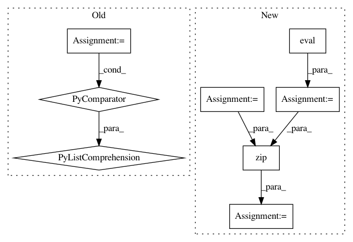

f9af206c5d9a13cb84ccd4116e1a6505e5c02e8a,anago/models/lstm-crf.py,NeuralEntityModel,report,#NeuralEntityModel#Any#Any#Any#,59
Before Change
def report(self, X_word_test, X_char_test, y_test):
y_true = [y.argmax() for y in itertools.chain(*y_test)]
y_pred = self.predict([X_word_test, X_char_test])
y_pred = [y.argmax() for y in itertools.chain(*y_pred)]
tagset = set(self.indices_tag) - {"O", "<PAD>"}
tagset = sorted(tagset, key=lambda tag: tag.split("-", 1)[::-1])
class_indices = {cls: idx for idx, cls in enumerate(self.indices_tag)}
After Change
def report(self, X_word_test, X_char_test, y_test):
y_true = [y.argmax() for y in itertools.chain(*y_test)]
transition_matrix = self.transition_matrix.eval(session=K.get_session())
y_pred = self.predict([X_word_test, X_char_test])
y_pred, _ = zip(*[tf.contrib.crf.viterbi_decode(y_, transition_matrix) for y_ in y_pred])
y_pred = list(itertools.chain(*y_pred))
tagset = set(self.indices_tag) - {"O", "<PAD>"}
tagset = sorted(tagset, key=lambda tag: tag.split("-", 1)[::-1])
In pattern: SUPERPATTERN
Frequency: 3
Non-data size: 8
Instances
Project Name: Hironsan/anago
Commit Name: f9af206c5d9a13cb84ccd4116e1a6505e5c02e8a
Time: 2017-07-06
Author: light.tree.1.13@gmail.com
File Name: anago/models/lstm-crf.py
Class Name: NeuralEntityModel
Method Name: report
Project Name: keras-team/keras
Commit Name: 94dbc3042f5a85b399f5ce2859d4e8fbafd235b9
Time: 2017-07-06
Author: me@taehoonlee.com
File Name: tests/keras/backend/backend_test.py
Class Name:
Method Name: check_single_tensor_operation
Project Name: keras-team/keras
Commit Name: 94dbc3042f5a85b399f5ce2859d4e8fbafd235b9
Time: 2017-07-06
Author: me@taehoonlee.com
File Name: tests/keras/backend/backend_test.py
Class Name:
Method Name: check_two_tensor_operation